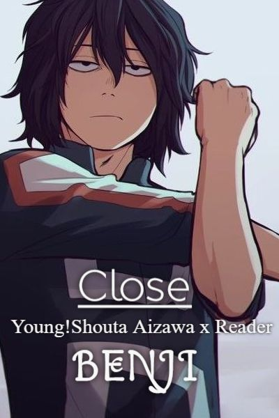

| Nome: Bastião so isso mesmo |
| Gênero: masc. | Altura: 1,66 | Vida: 4 | Iniciativa: |
| Idade: 17 | Peso: 60kg | Fadiga: 2 | Defesa: 12(+4) |
| Características |
| FOR: 2(+1) | CON: 4(+2) | INT: 2(+1) | POD: 4(+2) | CAR: 8(+4) |
| DEX: 8(+4) | DET: 3(+1) | SAB: 6(+3) | SOR: 8(+4) | APA: 1(+0) |
|
Armas
|
| Adaga |
Bônus: +2 |
| Fuzil |
Bônus: +3 |
| Poderes |
| duplo o poder da mistica |
Ação: P | Alcance: | Duração: C |
| Se transforma em alguel que ja viu (rouba atributos fisicos) |
| Ler memoria recente |
Ação: S | Alcance: | Duração: |
| Le os ultimos pensamentos/memorias de quem ele se transformou |
| Duplo bestial e agora igual o mutano |
Ação: P | Alcance: | Duração: C |
| Se transforma em animais de tamanho entre um cão medio e um gorila |
| Feitos |
| Furtivo | Se esconde muito bem |
| Vantagem em testes de furtividade |
| Ator em ascensão | +1 em testes que envolvão carisma |
| A cada 5 testes de carisma ou pericias que usam carismas adiciona +1. 2/5 |
| Saque rapido | usa itens na ação bonus |
|
| Pericias |
| Acrobacia: 2+dex | Blefar: 1+dex | Cavalgar: dex | Tecnologia: int | Diplomacia: 1+car |
| Dirigir: dex | Disfarce: car | Escalar: 1+dex | Furtividade: dex | Intimidar: 1+car |
| I.I.: 2+sab | Investigar: int | Medicina: 1+sab | nadar: for | Notar: 2+sab |
| Pilotar: 6+dex | Procurar: int | Seduzir: 1+apa | Violão: dex | artes: 6+dex |
Historia: é um simples ladrão e arruaceiro de Legran, cresceu em um orfanato, no periodo que ficou no orfanato era bem extrovertido mas nunca foi adotado, quando tinha 14 duas crianças apareceram machucadas mas ele não pode fazer nada e isso o perturba ate hoje, so saiu do orfanato quando foi convidado a estudar en uma escola um pouco diferente.
|

Espécie: doppelganger
Mãe: Saria (Mãe de consideração)
Pai: Não se sabe
Aniversario: 17/12 meu aniversario tbm
Local de nasc.: Legran
atualmente é: Estudante
|